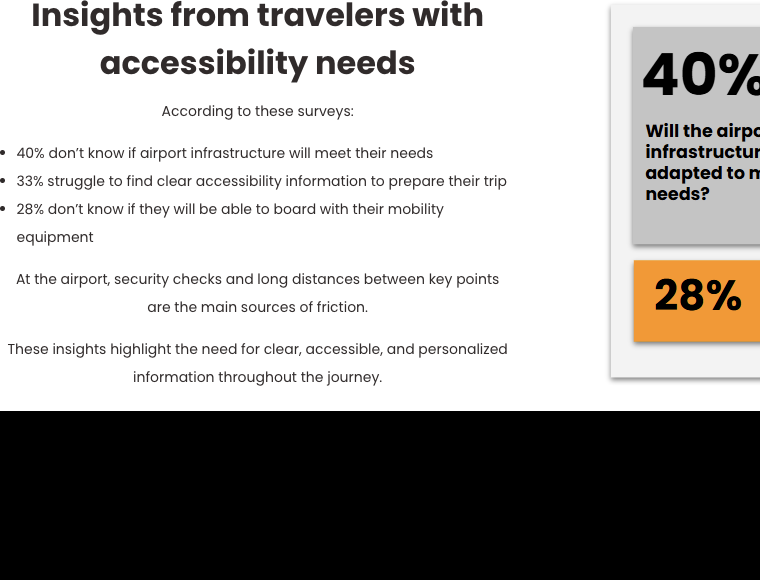
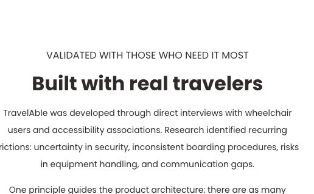
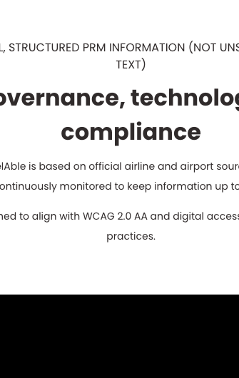
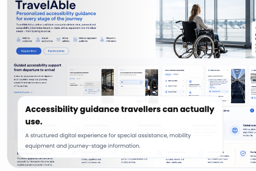

TravelAble turns fragmented accessibility and PRM information into a structured, traveller-friendly digital experience.

A clearer self-service layer helps teams answer accessibility questions consistently across the traveller journey.
Clear, maintained information supports better governance, internal alignment and transparent accessibility communication.

TravelAble is shaped around practical questions travellers ask when planning assisted and accessible journeys.

From assistance requests to onboard preparation and arrival guidance, TravelAble can support a wider accessibility information layer.
